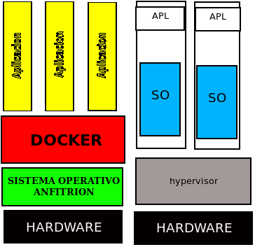

Docker es un subsistema de virtualizacion que comparte con el anfitrion el kernel y el sistema de archivos. El anfitrion siempre es un sistema linux.Si estamos en Windows o MAC necesitare una maquina virtual windows virtualizada con virtualbox o similar.
Un software de maquinas virtuales necesita instalar el sistema operativo completo.Ejemplos de sistemas de virtualizacion
Un software de contenedores es un sistema de virtualizacion que comparte el kernel con el anfitrion.Se basa en el concepto de microservicio, donde tengo todos los progrramas instalados,configurados y fucionando,gracias a los contenedores.

Para saber mas sobre el tema
Un Dockerfilees una receta para crear una imagen para una aplicacion particular de Docker. De este modo podemos tomar una imagen base, instalarle programas, configurar esos progreamas y dejarla preparada para crear contenedores a partir de ella.
Veamos un ejemplo:
# use phusion/baseimage as base image.
from ubuntu:latest
# use baseimage-docker's init system.
cmd ["/sbin/my_init"]
# install prerequisites
run apt-get update; \
apt-get install -y udhcpd
# set up start up scripts
run mkdir /etc/service/udhcpd
add udhcpd.sh /etc/service/udhcpd/run
run chmod +x /etc/service/udhcpd/run
# clean up apt when done.
run apt-get clean && rm -rf /var/lib/apt/lists/* /tmp/* /var/tmp/*
# expose the port
#expose 67
#expose 67/udp
#expose 68
#expose 68/udp
# volumes
volume /data
el comando from sirve para indicar que queremos como una imagen base.
cmd ["/sbin/my_init"].este comando es para usar la imagen como sistema de incio.
run apt-get update; \ apt-get install -y udhcpd esto es para instalar los prerequisitos.
run mkdir /etc/service/udhcpd add udhcpd.sh /etc/service/udhcpd/run run chmod +x /etc/service/udhcpd/run estos comandos son para crear los scripts de inicio.
run apt-get clean && rm -rf /var/lib/apt/lists/* /tmp/* /var/tmp/* con esto limpiamos el archivo.
exponemos los puertos 67 y 68
volume /data y vemos los volumenes.
# the start and end of the ip lease block
start 172.17.0.200
end 172.17.0.210
# the interface that udhcpd will use
interface eth0
opt dns 192.168.18.3 8.8.8.8
option subnet 255.255.0.0
opt router 172.17.0.1
# opt wins 192.168.10.10
# option dns 129.219.13.81 # appended to above dns servers for a total of 3
option domain local
option lease 864000
crear el contenedor:
docker build .lanzar el contenedor: docker run -d --net=host -p 67:67 -p 67:67/udp -p 68:68 -p 68:68/udp --name=dhcpd -v "ruta al directorio udhcpd"/data ubuntu:latest
abrir terminal en contenedor: docker exec -ti nombre_contenedor /bin/bash